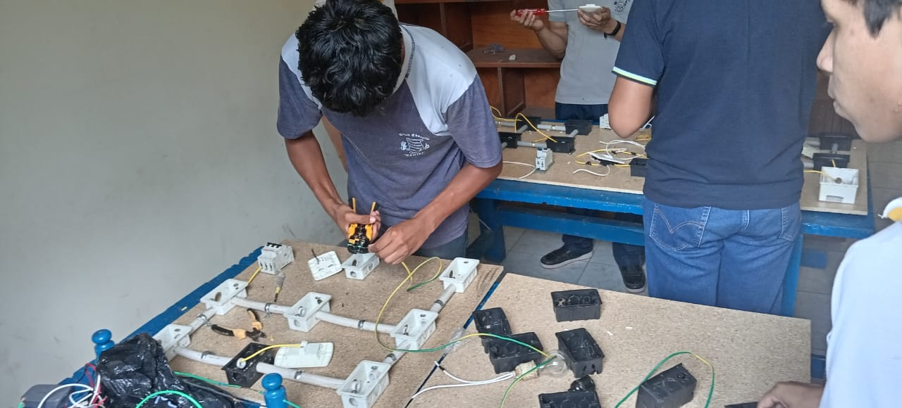

NUESTRAS CLASES PEDAGÓGICAS
Electricidad Industrial

Circuitos Eléctricos
Realiza el análisis, diseño y montaje de circuitos eléctricos industriales, aplicando normativas de seguridad y eficiencia energética en cada proyecto.

Motores y Control
Domina la instalación, el mantenimiento y el control de motores eléctricos, fundamentales en cualquier proceso de producción industrial moderno.

Automatización
Aprende a programar controladores lógicos programables (PLC) y a diseñar sistemas automatizados para optimizar procesos industriales.